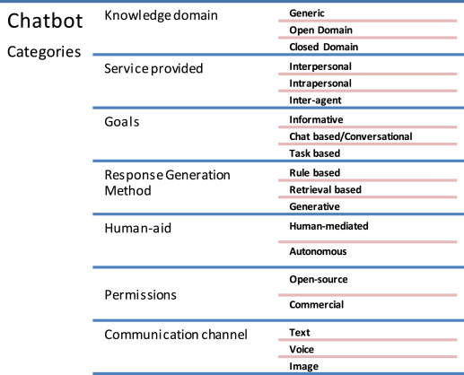
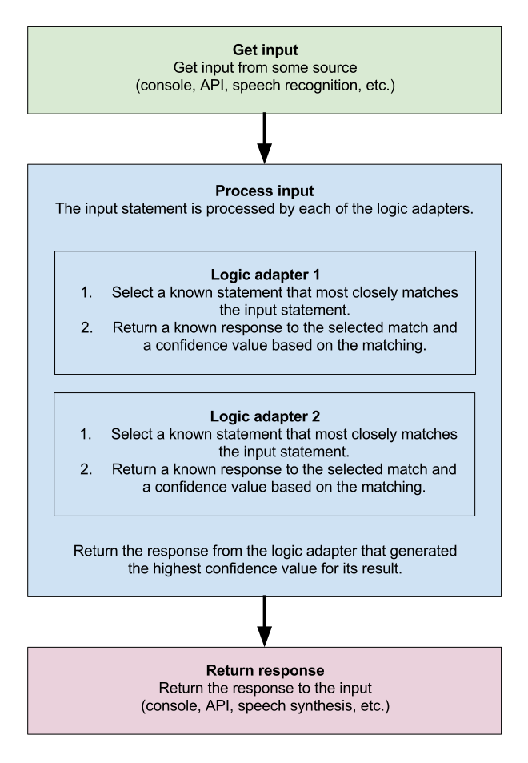

Overview
This project will essentially design a tool that can empower staff. We will construct a chatbot that could be a valuable tool to support staff within HR, Finance, and Staff Resources on services offered, process information, legislation, and policy details offered at UWA.
The chatbot's function would act as a training tool by receiving input from an individual, processing the input, and providing an answer. These could be questions we usually get from customers and colleagues, pointing them in the right direction or giving them resources that could help them find the answers. The chatbot will be trained to recognise topics and keywords and choose the most appropriate and relevant response. This tool would make life easier for individuals in positions such as frontline customer support in large and complex organisations.
Motivation
Helping people is a passion and I want to drive the focus of this project towards supporting staff to do their jobs in an efficient and timely manner by creating this tool as a knowledge base that will provide answers.
Chatbots are familiar with large companies that use the technology in online sales or provide basic customer service; I have had many experiences. In my personal experience, there does not appear to be much of this technology used in the workplace to support internal staff. The focus and demand seem to be more on how customer experience can be improved within a business and therefore improve the organisation's image.
The Chatbots' classification shows that a chatbot can be developed and have multiple categories and uses.

(Fig. 3. Chatbots’ Classification., 2020)
I believe chatbots can improve services provided to staff to make their lives easier, and I would like to explore how we can develop a chatbot as a training tool.
Description
The project is based on the documentation produced by Gunther Cox, and the process flow diagram is a good starting point.

(Cox, n.d.)
To address the points in the diagram.
- API: A web API would be sufficient on SharePoint.
- Console: Console will be in the web browser.
- Speech recognition: The Web Speech API contains text to speech, or TTS (Using the Web Speech API - Web APIs | MDN, 2022)
- Logic adapter: We would need to create an FAQ to map out solutions and trigger phrases to include in the code.
Features of the chat bot
The chatbot could act as a purpose-built training tool for internal staff to assist them in answering queries that would not usually come up very often.
The chatbot can be personalised to interact seamlessly according to the organisation's standards with staff, and it could resemble a human-to-human conversation. It is possible to process written input and provide audio responses with text-to-speech availability.
Features 24-hour availability (Dilmegani, 2022) as it will be posted online in SharePoint. Instant responses (Dilmegani, 2022) will be provided online, and it can multitask if multiple people engage it. Due to the non-delay of responses, efficiency could increase work processing. (CHATBOTS ARE HERE TO STAY So what are you waiting for?, 2017)
Consistent answers are provided, and we can ensure the answers built into the code are in line with the Business values and quality check if needed. Reduced costs as it does not require an annual employee salary with fewer resources required.
Over time we can expand chatbot understanding and services, making it more efficient. Feedback from staff interactions with the chatbot can be used to increase engagement. Recorded interactions can provide invaluable data to the organisation to understand roadblocks or pain points to staff that can be addressed.
There are no emotional exchanges in times of stress as the chatbot will not respond to any angry responses. We could include training the chatbot to respond appropriately to de-escalate the situation if needed.
In the year 2022, younger people are more likely to want to find the answer to their questions themselves online before asking a human. Shy or introverted personality types may prefer chatbot interactions to a human.
FAQs and surveys can be reviewed within the organisation to provide regular updates to code. Chatbots have multiple use-cases, which means we can create multiple chatbots to serve different purposes if there is a need for them, as shown in the Chatbots' Classification earlier.
Tools and Technologies
As described in the description, I have addressed the main points in the process flow diagram.
A web API would be sufficient, which will be on SharePoint. The console will be in the web browser.
The Web Speech API contains text to speech, or TTS (Using the Web Speech API - Web APIs | MDN, 2022).
We would need to create an FAQ to map out solutions and trigger phrases in the code.
First, we need a terminal to write python language and import library as described in the Chatterbot library and documentation (Cox, 2022).
A Python code editor will be sufficient such as Python IDLE or Visual Studio Code.
Web API will be on SharePoint, which is included in Microsoft 365.
The Python web framework used will be Flask; I have not had much experience using this. Git hub can manage version control.
Skills Required
Intermediate skill in writing Python is sufficient, and further code support can be provided by the python documentation and the Chatterbot library and documentation (Cox, 2022) I believe we can produce this with average skills in writing HTML, but I am not entirely sure how much skill will be needed in Java. Intermediate skills in Computer literacy are required.
Outcome
If the project is successful, it would have a tool that could be used to answer questions instantly. Eventually, it would upskill staff or become a daily tool to provide repetitive answers to common questions and be trained over time to answer complex questions.
The original issue of training and support would be filled with this tool, and staff will be empowered to carry out their jobs knowing they can ask questions any time of the day and get an answer straight away. Productivity could improve, and morale in the teams would increase.
References
Adamopoulou, E. and Moussiades, L., 2020. Chatbots: History, technology, and applications. Machine Learning with Applications, [online] 2(100006). Available at: [Accessed 20 March 2022].
2020. Fig. 3. Chatbots’ Classification.. [image] Available at: [Accessed 20 March 2022].
2017. CHATBOTS ARE HERE TO STAY So what are you waiting for?. [ebook] Accenture, p.4. Available at: [Accessed 20 March 2022].
Dilmegani, C., 2022. Top 15 Chatbots Benefits in 2022 For Companies & Customers. [Blog] AI Multiple, Available at: [Accessed 20 March 2022].
Cox, G., 2022. About ChatterBot — ChatterBot 1.0.8 documentation. [online] Chatterbot.readthedocs.io. Available at: [Accessed 20 March 2022].
Cox, G., n.d. Process flow diagram. [image] Available at: [Accessed 20 March 2022].
SEEK. 2022. HRIS Administrator. [online] Available at: [Accessed 20 March 2022].
E07593.github.io. 2022. Student Name - ePortfolio. [online] Available at: [Accessed 20 March 2022].
Developer.mozilla.org. 2022. Using the Web Speech API - Web APIs | MDN. [online] Available at: [Accessed 20 March 2022].